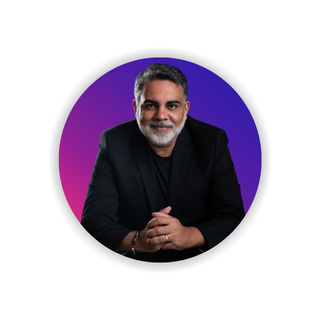
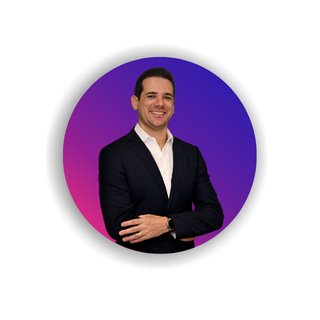
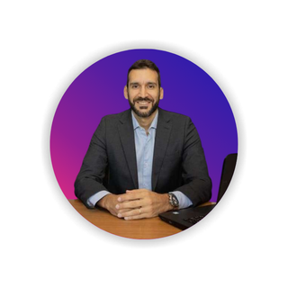
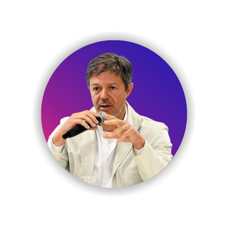
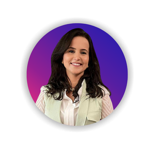

Pessoas Cultura
Com abordagem leve, instigante e embasada, nossas palestras promovem as pessoas: líderes e equipes assumindo o protagonismo frente aos desafios apresentados.
Quem Somos
O serviço público não nasceu para ser uma máquina. Nasceu para servir.
Com o tempo, foi sendo engessado e esvaziado de sentido. A Inova Pública surge para lembrar o que nunca deveríamos ter esquecido: servir é um ato profundamente humano — é cuidar de vidas, ampliar possibilidades, transformar realidades.
Fazemos isso com quem conhece os códigos invisíveis das instituições públicas e acredita que a inovação mais potente é a que transforma a cultura, e não apenas o sistema. Porque o futuro do serviço público não está nos algoritmos: está na escuta, na colaboração e no servidor que se vê como parte da solução.
Existimos para reescrever o DNA do serviço público — inspirando servidores e instituições a servir com propósito, inovar com sentido e transformar com impacto.
Somos uma rede de servidores que trabalham por mudanças reais, nas quais as pessoas são os agentes dessa mudança e, apoiadas em tecnologias digitais e humanas, promovem a inovação que gera valor público.
Com abordagem leve, instigante e embasada, nossas palestras promovem as pessoas: líderes e equipes assumindo o protagonismo frente aos desafios apresentados.
Apoiamos a liderança e as equipes na inovação do setor público, partindo da premissa de que inovar é servir com propósito: quando encontramos um “porquê”, inovamos no “como”.
Apoiamos líderes e equipes a aproveitar o potencial da transformação digital, repensando formas de trabalho e usando inteligência artificial e automação como aliadas estratégicas.
Servidores e especialistas que vivem os desafios do setor público — e os transformam em aprendizado prático, com autoridade e propósito.

+12 anos no Poder Judiciário. Mestrando em Gestão Pública (UnB), com formações em Negociação (FGV) e Design Thinking. Criador do Canvas de Negociação Criativa; condecorado com a Medalha do Pacificador e o Prêmio Ser Humano ABRH-DF.
+10 anos em desenvolvimento de pessoas e cultura organizacional. Pedagoga (UnB), mestranda em Gestão Estratégica de Organizações e formada em Estruturas Libertadoras. Trajetória na Polícia Federal, TJDFT e STJ.

+10 anos em liderança humanizada. Especialista em Neurociência, Psicologia Positiva e Mindfulness (PUC-PR). Une rigor científico e prática para construir ambientes mais saudáveis. Laboratorista do STJ LAB.

Facilitador na interseção entre tecnologia de ponta e desenvolvimento humano. Base jurídica somada a certificações em IA e comportamento. Membro da Comissão de Inteligência Artificial do STJ.
Vasta trajetória em gestão de pessoas e em projetos governamentais. Usa a criatividade para romper a resistência à mudança, criando dinâmicas gamificadas que engajam servidores em processos de transformação.

Bacharel em Direito, administrador e cientista de dados. Atua na fronteira entre a gestão de alto desempenho e as novas metodologias de inovação; liderou projetos de modernização nacional reconhecidos e premiados.

Gestora pública e líder em educação corporativa e inovação no Poder Judiciário. Especialista em Administração (FGV). Experiência em direção de unidade estratégica e em programas de capacitação e gestão da mudança.
Transformar pessoas, culturas e organizações públicas por meio de experiências formativas, inovação colaborativa e tecnologias éticas — ativando um novo DNA institucional centrado no cidadão.
Ser, até 2030, referência na criação do novo DNA do serviço público — desenvolvendo lideranças, práticas e ecossistemas capazes de unir tecnologia, empatia e valor público em larga escala.
Conte seu desafio. Retornamos com uma proposta sob medida para o seu contexto.
Solicitar proposta